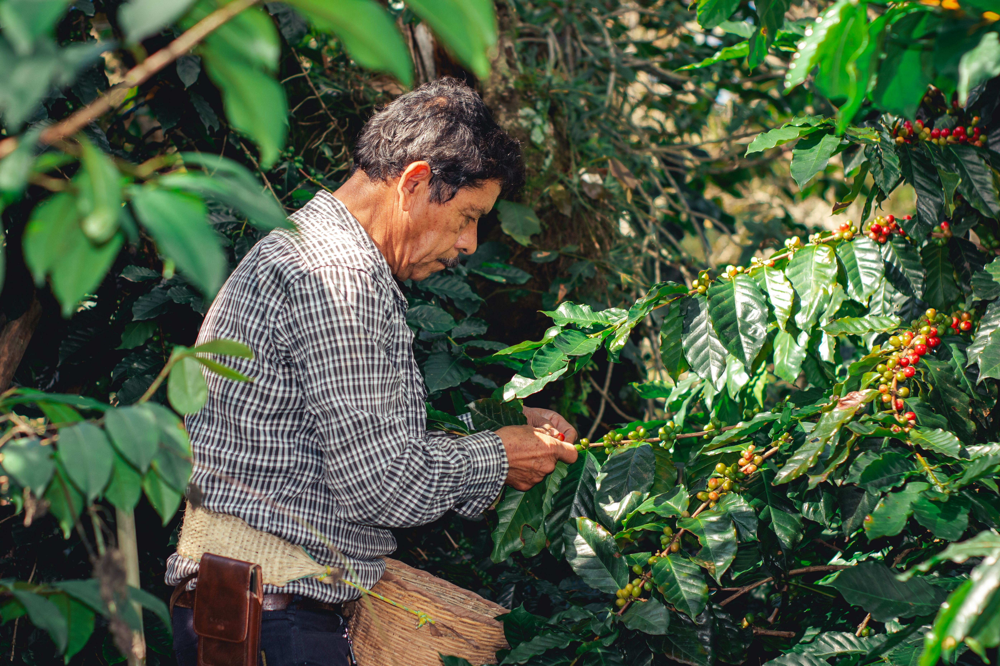
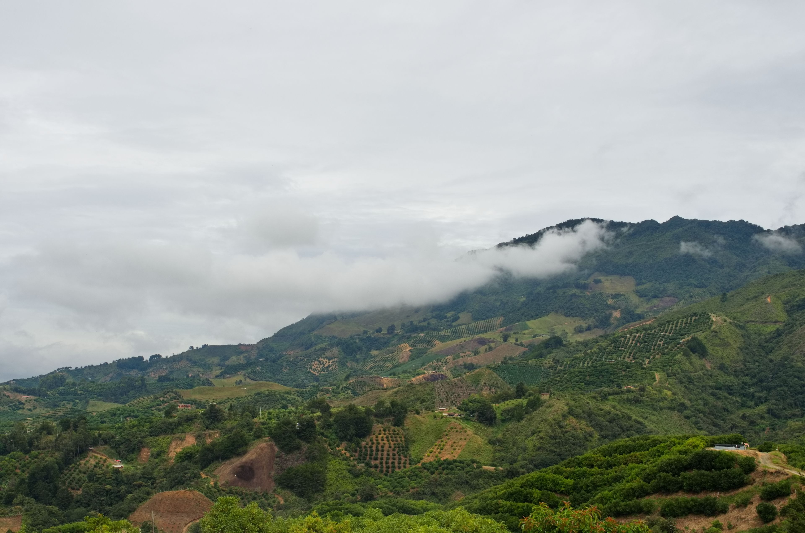
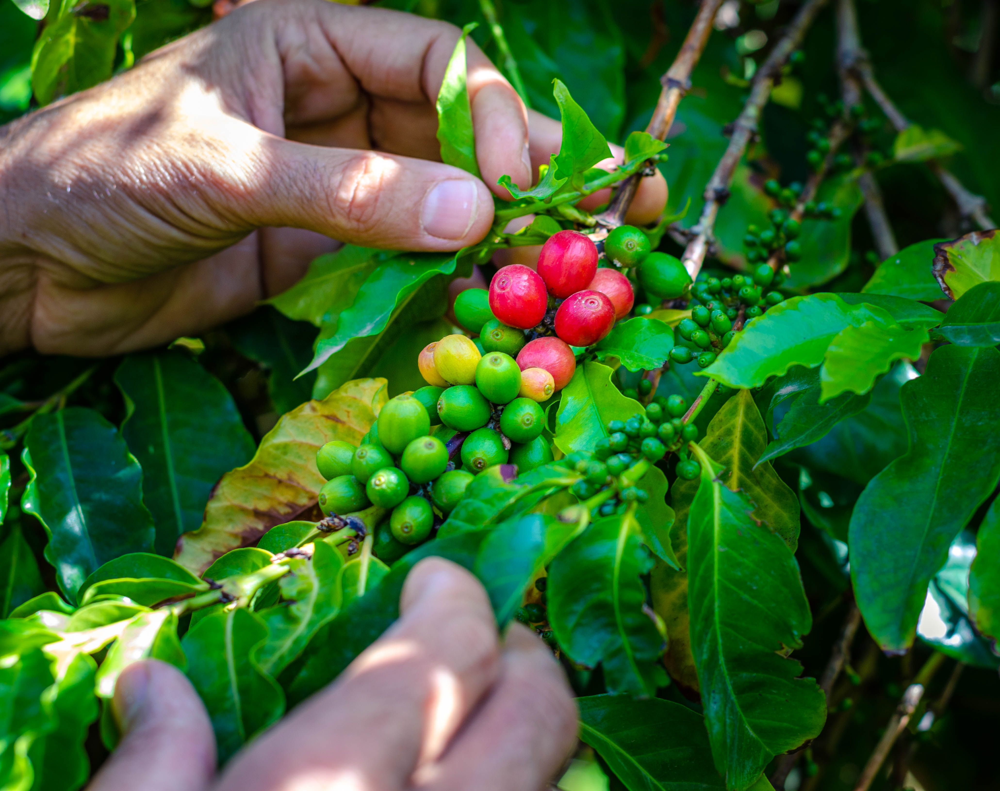
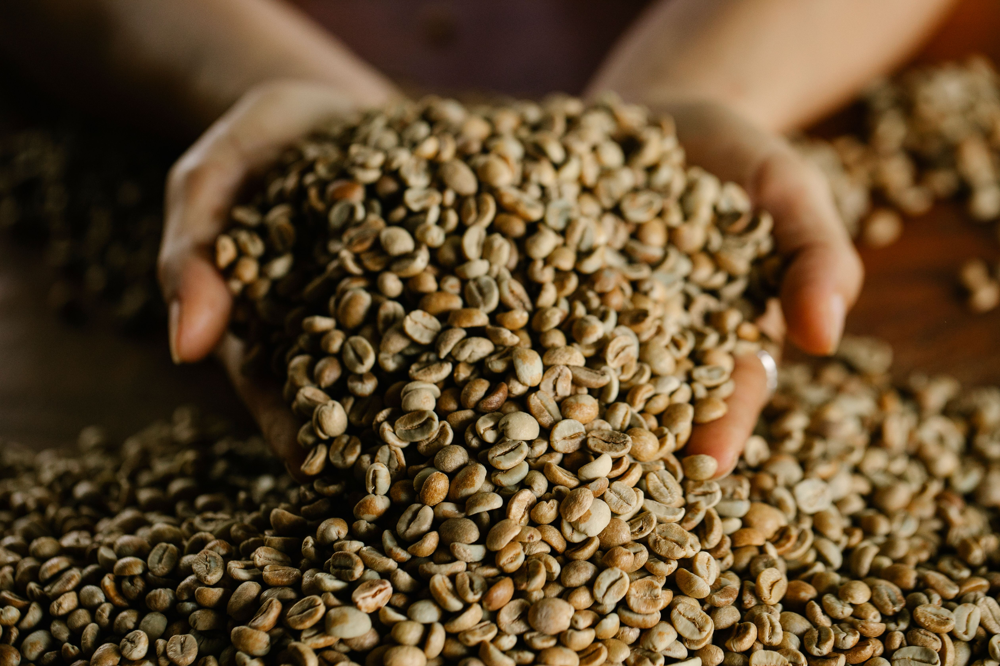
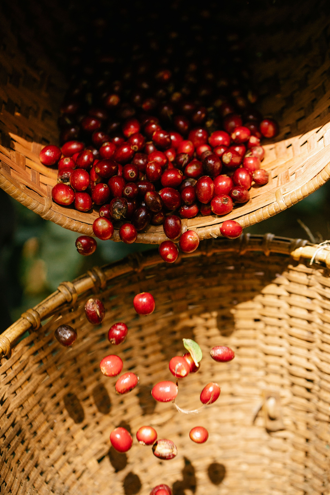
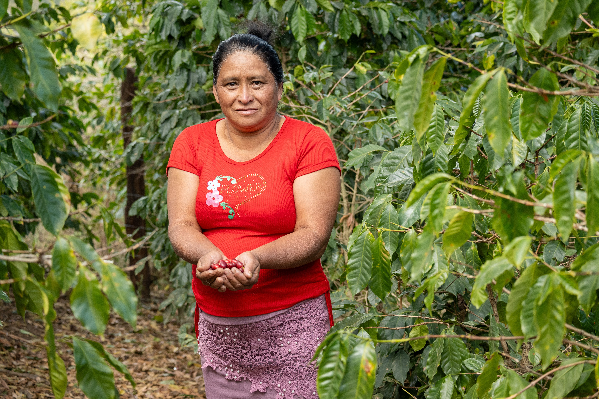

Las Personas
El valor del conocimiento agrícola
El esfuerzo y dedicación de las familias productoras que cuidan la planta durante todo el ciclo de cosecha.
TRAZIA trabaja para acercar productores de café en Venezuela a tostadores especializados y mercados internacionales, con una visión centrada en el origen, la trazabilidad, la calidad y las relaciones de largo plazo.
Detrás de cada café existe una persona, un territorio, un conocimiento y una historia. En TRAZIA creemos que comprender el origen es el primer paso para construir relaciones más transparentes y valiosas.

El esfuerzo y dedicación de las familias productoras que cuidan la planta durante todo el ciclo de cosecha.

Las altitudes, suelos fértiles y microclimas de las serranías que imprimen carácter único a cada variedad.

La recolección en el punto óptimo de madurez que marca el punto de partida hacia un café de calidad.
Construimos puentes éticos y profesionales guiados por cuatro convicciones claras.
Conocer el territorio, las condiciones de altitud, el suelo y a las personas que hacen posible cada grano.
Dar importancia a la información clara que permite comprender el recorrido completo del café desde su nacimiento.
Promover conexiones duraderas basadas en la confianza mutua, la comunicación abierta y el respeto por el trabajo agrícola.
Valorar el cuidado, el conocimiento agronómico y la rigurosidad en los procesos que influyen en cada taza.
Inspirados en la línea que traza nuestro logotipo, comprendemos cada paso como parte de un proceso continuo de valor y respeto.
El trabajo humano y la dedicación en la tierra.
Altitud, suelo, sombra y microclima natural.
Recolección selectiva y beneficio cuidadoso.
Datos de origen, proceso y variedad.
Diálogo profesional y valoración del perfil.
Presencia internacional con identidad clara.
Venezuela cuenta con una profunda tradición cafetalera y una geografía privilegiada. Desde las estribaciones de la Cordillera de los Andes hasta los valles costeros, diversas regiones albergan condiciones excepcionales para el cultivo de café de calidad.
TRAZIA busca contribuir a una mayor visibilidad del café venezolano, acercando sus territorios, productores y posibilidades a profesionales especializados de otros mercados.
Mérida, Táchira y Trujillo. Alturas superiores a 1500 msnm con clima fresco y suelos ricos.
Lara y Portuguesa. Zonas con historia cafetalera y prácticas tradicionales de cultivo bajo sombra.

Trabajamos para estructurar puentes de colaboración directa y transparente entre origen y destino.
Facilitar el acercamiento entre productores de origen y tostadores interesados en conocer nuevas procedencias con identidad clara y trazabilidad auténtica.
Organizar y comunicar información relacionada con procedencia, territorio, productor y proceso, cuando esté disponible y verificada en campo.
Apoyar la construcción de relaciones profesionales de largo plazo entre los participantes de la cadena de valor, fundamentadas en la confianza y el respeto mutuo.
Explorar oportunidades de conexión entre cafés de origen y mercados especializados que aprecian la calidad, la autenticidad y el relato del productor.

Nos interesa conectar con tostadores que valoren la calidad, la transparencia, la información de origen y las relaciones humanas detrás del café.

Queremos construir relaciones que permitan comprender mejor el trabajo, el conocimiento y las particularidades de cada origen, respetando la realidad de los productores y sus territorios.
TRAZIA nace de una convicción sencilla: cada origen tiene una historia que merece ser conocida. Nuestro propósito es trabajar en la conexión entre productores de café en Venezuela, tostadores especializados y mercados internacionales, poniendo en el centro la trazabilidad, la calidad, la transparencia y las relaciones humanas.
Nota institucional: TRAZIA se encuentra actualmente en proceso de desarrollo y conformación empresarial. Nuestro compromiso es avanzar con pasos firmes, claros y respaldados en la realidad de los territorios.
Si eres productor, tostador o profesional interesado en conocer más sobre el café de origen venezolano, nos gustaría conocer tu perspectiva.